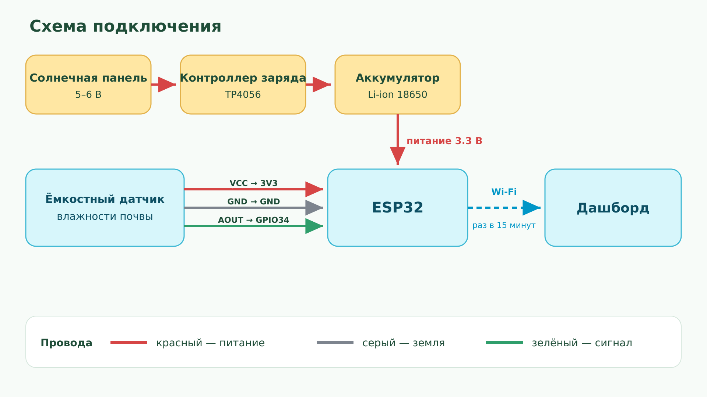

Культура
У картофеля, лука и помидора разные коэффициенты Kc.
water everywhere
Норма воды по погоде и культуре. Солнечный датчик влажности шлёт данные на этот экран.
Проблема
литров на гектар в день
в пиковый сезон
Решение
У картофеля, лука и помидора разные коэффициенты Kc.
Дождь не считаем. Испарение умножаем на 1,15.
Если минимум ≤ 0 °C, на календаре метка и короткий совет.

После демо
Если дождь уже закрыл испарение, полив в этот день не нужен.
Календарь отмечает дни, где минимум опускается до 0 °C.
База — 60 000 л/га в день. Процент на экране считается для этой недели, это не полевой замер.
График влажности подписан «демо-данные»: так будет выглядеть сигнал раз в 15 минут.